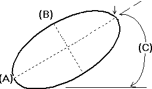

Ellipse command bar
- Type
-
Sets the ellipse type to By center (n) or By 3 points (p). You can also use the N or P keys on the keyboard.
- Properties
-
- Primary
-
Sets the length of the primary axis. The ellipse orientation is based on the primary axis.

- Secondary
-
Sets the length of the secondary axis. The secondary axis is perpendicular to the primary axis.
- Angle
-
Sets the angle of the primary axis of the ellipse. Zero degrees is horizontal to the x axis. The angle increases in the counterclockwise direction.
- Style
-
- Style
-
Sets the active style.
- Color
-
Sets the drawing color. You can click the More option to define custom colors with the Color dialog box.
- Width
-
Sets the line width.
- Type
-
Sets the drawing line type and style.